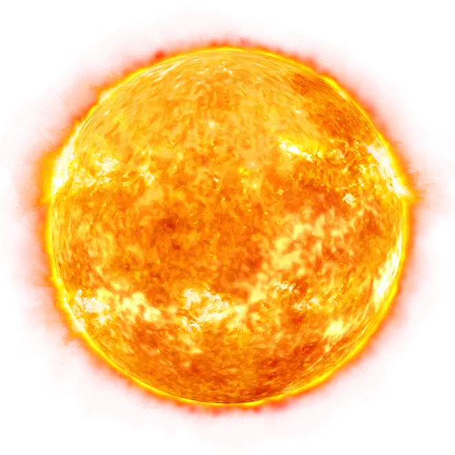

История Солнечной системы
Как возникла Солнечная система?
Жизнь зародилась на Земле около 3,8 млрд лет назад. До этого события и даже во время становления жизни шли процессы образования нашей планеты и превращения ее в подходящее и уютное для эволюции место. Но как же образовалась наша планета и вся планетная система около Солнца? Что послужило причиной формирования звезды и 8 "шариков" вокруг нее? В этой статье я расскажу вам о существующих гипотезах и теориях возникновения Солнечной системы.
Перед началом небольшая вводная: изучением происхождения и развития небесных объектов занимается раздел астрономии, который называется космогония.
Гипотеза Лапласа
Данная гипотеза также носит название "небулярная" (лат. "nebula" - туман) Впервые она была озвучена в XVIII веке Иммануилом Кантом , Эммануилом Сведенборгом и Пьером-Симоном Лапласом. Со временем эта гипотеза подверглась доработке с участием таких наук, как астрономия, физика, геология и планетология. Когда начались космические наблюдения, гипотеза подверглась тщательной проверке и улучшениям с целью объяснить новые данные и наблюдения.
Этапы гипотезы:
● Около 4,5 млрд лет назад начался гравитационный коллапс части огромного газопылевого облака. Причиной его начала послужило уплотнение вещества газопылевого облака (возможными причинами чего могли стать как естественная динамика облака, так и прохождение сквозь вещество облака ударной волны от взрыва сверхновой). Помимо водорода и гелия, облако уже содержало в своем составе некоторые металлы;
● В дальнейшем размеры облака уменьшались, оно сжималось все сильнее, и скорость его вращения увеличивалась, что привело к уплощению и формированию характерного диска;
● При возрастании плотности росла и температура, особенно в центре диска. Это привело к началу светимости и образованию протозвезды. Более далекие же от центра области охлаждались, и под действием гравитационных взаимодействий начали отслаиваться от диска, формируя протопланеты;
● В конце концов, температура протозвезды достигла миллионов кельвинов, и начались реакции термоядерного синтеза, что привело к появлению настоящей звезды. Протопланеты, окончательно остыв, превратились в планеты и начали крутиться примерно в одной плоскости со звездой.
Естественные спутники планет могли образоваться из самих протопланетных дисков, либо в результате столкновения планет с пролетающим крупным объектом ( в случае Луны), или же просто вследствие гравитационного захвата объекта.
Гипотеза Шмидта
Известный советский ученый Отто Юльевич Шмидт в начале 40-х гг. XX века предположил, основываясь на некоторых научных данных, что планеты никогда не находились в раскаленном состоянии, в отличие от Солнца и других звезд.
Ученый допускал, что в один момент во вращающемся облаке образовалось сгущение — протосолнце. Другая часть облака, с массой в 10 раз меньшей, медленно вращалась вокруг этого уплотнения. Части туманности, сталкиваясь и отталкиваясь, постепенно размещались вокруг протосолнца так, чтобы не мешать друг другу. Постепенно они расположились в одной плоскости, а их орбиты вращения стали круговыми.
Шмидт считал, что в середине диска должны были образоваться самые крупные планеты, а вблизи звезды и вдали от нее — мелкие.
По началу гипотеза Шмидта была признана один из наиболее правдоподобных объяснений образования Солнечной системы. Однако,
в дальнейшем возник серьезный вопрос: как возникло само газопылевое облако и каким именно образом газ и пыль превратились в крупные планетные тела.
Гипотеза Шмидта не смогла ответить на эти вопросы, вследствие чего она была признана несостоятельной.
Стадии образования Солнечной системы
Основная теория предполагает, что на месте нынешней Солнечной системы 5 млрд. лет тому назад существовало гигантское облако из газов и пыли. Оно имело огромные размеры, и было растянуто в пространстве на 6 млрд. км.
Аналогичные пылевые облака существуют во многих уголках необъятной Вселенной. Их основная масса состоит из водорода. Это тот газ, из которого первоначально образуются звёзды. Затем, в результате термоядерной реакции, начинает выделяться инертный газ гелий. На долю остальных веществ приходится всего 2%.
Образование Солнца
В какой-то момент пылевое облако получило внешний мощный импульс, представляющий собой огромный выброс энергии. Это могла быть ударная волна, сгенерированная взрывом сверхновой звезды. А возможно, что внешнего воздействия и не было. Просто за счёт закона притяжения облако стало уменьшаться в объёме и уплотняться.
Данный процесс дал толчок гравитационному коллапсу. То есть произошло быстрое сжатие космической массы. В результате этого в центре возникло раскалённое ядро с очень высокой плотностью. Вся остальная масса рассосредоточилась по краям ядра. А так как в космосе всё вращается вокруг своей оси, то эта масса приобрела форму диска.
Ядро уменьшалось в размере, увеличивая свою температуру и плотность. В результате оно трансформировалось в протозвезду. А газовое облако вокруг ядра всё больше уплотнялось, пока в ядре температура и давление достигли критической величины. Это спровоцировало начало термоядерной реакции, и водород начал превращаться в гелий.
Протозвезда перестала существовать, а вместо неё возникла звезда под названием Солнце.
Новая звезда еще очень мала – она находится в стадии коричневого карлика. Она в течение нескольких сотен миллионов лет превращается в звезду солнцеподобного типа.
После того, как значительная часть массы протозвездной туманности сформировало звезду, вокруг нее образуется протопланетный диск.
Постепенно молодая звезда и окружающее ее пространство остывает, что приводит к конденсации летучих веществ. Формируются пылевые частички, начинающие слипаться между собой. Так постепенно образуются планетазимали – «кирпичики» диаметром не более 1 км, из которых строятся планеты.
Формирование планет земной группы


А вот далее пошёл другой процесс. Газопылевые облака, вращающиеся вокруг Солнца, стали стягиваться в плотные кольца.
Планеты внутренней группы сформировались в тех областях протопланетного диска, где температура слишком высока для существования частиц льда и газа в диком состоянии. Поэтому эти объекты построены преимущественно из термоустойчивых горных пород.
Планетазимали вначале быстро приращивают массу, достигая диаметра более километра. Далее крупные фрагменты притягивают к себе более мелкие, пока запас планетазималей в диске не окажется полностью исчерпан. Наступает стадия окончательного формирования Солнечной системы и приобретения ее телами определенной орбиты.Выражаясь совсем просто, можно сказать, что с ближайших ядер звезда «сдула» газовые оболочки. Так образовались маленькие планеты, вращающиеся рядом с Солнцем. Это Меркурий, Венера, Земля и Марс.
Возникновение газовых гигантов


Формирование газовых гигантов, к которым относятся Юпитер, Сатурн, Уран и Нептун, более сложный процесс.
До момента образования крупных планетазималей их развитие подобно планетам земного типа. Но в их составе содержатся частицы льда, и они наращивают свою массу путем аккреции газа из протопланетного диска. Это возможно, т.к. во внешней области будущей звездной системы температуры относительно невысоки.Формирование газовых гигантов оказывает значительное влияние на количество твердотельных планет внутри системы. Чем раньше началось образование газовых планет, тем меньше строительного материала останется на формирование землеподобных тел.
Одной из заключительных стадий эволюции Солнечной системы стало образование главного пояса астероидов. Считается, что он образован из «строительного материала», оставшегося после формирования основных планет.
Образование спутников
 В дальнейшем произошло возникновение спутников вокруг планет.
Естественные спутники образовались у большинства планет Солнечной системы, а также у многих других тел. Так возле Земли появилась Луна.
В дальнейшем произошло возникновение спутников вокруг планет.
Естественные спутники образовались у большинства планет Солнечной системы, а также у многих других тел. Так возле Земли появилась Луна.
Различают три основных механизма их формирования:
●формирование из около-планетного диска (в случае газовых гигантов);
●формирование из осколков столкновения (в случае достаточно крупного столкновения под малым углом);
●захват пролетающего объекта.
И, в конце концов, образовалось единое космическое сообщество, которое существует по сей день.
Вот таким образом наука объясняет происхождение Солнечной системы. Кстати, данная теория присуща и другим звёздным образованиям, которых в космосе бесконечное множество.
Будущее Cолнечной системы
По последним научным данным, Солнечная система является стабильной системой. То есть больших изменений в ближайшее время не стоит ждать. Самые большие изменения будут происходить с изменением состояния Солнца.
Другими словами, не будет претерпевать экстремальных изменений до тех пор, пока Солнце не израсходует запасы водородного топлива. Этот рубеж положит начало переходу Солнца в фазу красного гиганта.
Спустя 1 миллиард лет из-за увеличения солнечного излучения околозвёздная обитаемая зона Солнечной системы будет смещена за пределы современной земной орбиты.
В настоящее время
Солнечная система и ее происхождение изучаются во многих известных институтах мира.
Проходящие ежегодно международные конгрессы включают в программу обязательное обсуждение этого вопроса, а в дискуссиях уже неоднократно принимали участие ведущие российские специалисты из Геофизического института при Академии наук. Углубленным исследованиям по теме «Солнечная система и ее происхождение» отводится важное место, а средства для их проведения выделяются из государственного бюджета.
Наступит момент, и благодаря неустанным трудам ученых завеса тайны приоткроется, чтобы население Земли смогло узнать еще больше о происхождении нашей удивительной планеты.
История открытия каждой планеты в нашей Солнечной системе
Спутники вроде «Кеплера» работали сверхурочно, чтобы открыть сотни новых планет в нашей галактике. История открытия Солнечной системы, ее планет, это интересный способ взглянуть на историю науки и понимания человечеством наших близких соседей. Изучение наших планет меняло наш взгляд на мир вокруг нас и понимание нашего места во Вселенной. Но как мы впервые обнаружили планеты в нашем локальном объеме космоса? То есть в нашем пузыре под названием Солнечная система. Вот все истории о том, как астрономы, живущие сотни лет назад, открыли каждую планету в нашей Солнечной системе.
Как открыли Меркурий
Будучи ближайшей к Солнцу планетой в нашей Солнечной системе, Меркурий вращается в пределах 46-70 миллионов километров от светила. Древние астрономы знали о скорости вращения планеты вокруг солнца: ассирийские астрономы ассоциировали планету с богами, такими как Набу, писцом и посланником богов; древние греки называли это тело Меркурием, также в честь посланника богов. С чем же связана такая ассоциация? Год на этой планете длится всего 88 дней, самый короткий из всех.
В 1631 году астроном Пьер Гассенди впервые наблюдал транзит Меркурия через солнце, и буквально спустя пару лет другой астроном Джованни Зупи открыл фазы, указывающие на то, что планета вращается вокруг Солнца. Другие астрономы постепенно добавляли к этим открытиям свои: итальянский астроном Джованни Скиапарелли наблюдал планету и заключил, что Меркурий был приливно заблокирован солнцем, то есть обращен к светилу всегда только одной стороной.
В современную эпоху освоения космоса пришли и другие открытия: очень многое о планете узнали совсем недавно. Советские ученые впервые использовали радар для исследования планеты в начале 1960-х, а ученые в обсерватории Аресибо с помощью радиотелескопа обнаружили, что планета вращается раз в 59 дней, а не в 88, как считалось ранее. В 1974 году зонд Mariner 10 впервые посетил планету, осуществил несколько облетов, картографируя поверхность, а в 2008 году к планете прибыли зонд MESSENGER, на орбите которой и остается по сей день.
Кто открыл Венеру
Вторая планета в Солнечной системе, Венера — самая яркая из планет, наблюдаемых с Земли. По этой причине ее изучали с незапамятных времен: первые записи о ней появились еще у вавилонян, которые назвали планету Иштар. Римляне видели в Венере богиню красоты, а майя считали, что планета является братом солнца. В 1610 году Галилео Галилей наблюдал фазы Венеры, подтвердив, что планета действительно вращается вокруг Солнца. Из-за плотной атмосферы планеты, наблюдения поверхности были невозможны до 1960-х годов, однако многие считали, что на Венере есть жизнь, поскольку по размерам планета была похожа на Землю.
В 1958 году радиолокационная съемка выявила, что поверхность планеты невыносимо горячая — и значит, неприветлива к жизни. Человечество решило взглянуть на злую сестру Земли поближе. Первая попытка, советский зонд «Венера-1», была предпринята в 1961 году и не увенчалась успехом, но Mariner 2, запущенный США, преуспел, облетев планету и подтвердив ее температуру, а также отсутствие магнитного поля. Новая советская миссия «Венера-4» успешно достигла Венеры и отправила обратно информацию об атмосфере планеты, прежде чем сгореть дотла во время входа в атмосферу. За этими миссиями последовали несколько других: Mariner 5, «Венера» 5 и 6, «Венера-7» с успешным приземлением, а после и повторение успеха силами «Венеры-8». Эти два последних зонда стали первыми искусственными объектами, которые успешно приземлились на поверхности другой планеты. Оба были уничтожены давлением и теплом планеты, но Советский Союз продолжал посылать зонды. NASA тоже: «Пионер-12» вращался вокруг планеты в течение 14 лет, составляя карту поверхности, а «Пионер-13» отправил несколько зондов прямиком к ней.<>
Как нашли Землю
Земля непрерывно наблюдалась человечеством с самого момента его появления. Но хотя мы знали, что стоим на твердой земле, чтобы выяснить истинную природу нашего дома, пришлось немного подождать. На протяжении многих веков люди считали, что Земля не является таким же объектом, как и наблюдаемые над ней: все вращалось вокруг Земли. Уже во времена Аристотеля философы определили, что Земля имеет сферическую форму, наблюдая тень от Луны.
Миколай Коперник — известный также как Николай — постулировали гелиоцентрический вид Солнечной системы еще в 1514 году. Книга «О вращении небесных сфер» была впервые опубликована в 1543 году и поставил под сомнение общепринятую точку зрения. Теория была спорной, но за ней последовали три объемных работы Иоганна Кеплера на тему коперниканской астрономии. Кеплер разработал три закона движения планет: «Планеты движутся вокруг Солнца по эллипсу, с Солнцем в одном из фокусов», «Каждая планета движется в плоскости, проходящей через центр Солнца, причём за равные промежутки времени радиус-вектор, соединяющий Солнце и планету, описывает равные площади», «Квадраты периодов обращения планет вокруг Солнца относятся как кубы больших полуосей орбит планет». Эти законы помогли определить движение планет и позволили нам усомниться в предыдущем виде Солнечной системы. Поначалу теории Кеплера не были популярны, но в конце концов разошлись по всей Европе. К тому моменту, когда Коперник опубликовал свои взгляды, экспедиция Фернана Магеллана смогла обогнуть земной шар в 1519 году.
И только 24 октября 1946 года мы смогли взглянуть на наш родной мир, когда первый снимок Земли был сделан с помощью модифицированной ракеты «Фау-2», запущенной с полигона в Нью-Мексико.
Когда открыли Марс
Кроваво-красная четвертая планета нашей Солнечной системы давно ассоциируется с римским богом войны, которого зовут Марс. И если многие считали, что Венера вполне могла обладать земной атмосферой, подобные мысли были и на тему Марса. В 1877 году, исследуя планету с помощью телескопа, астроном Джованни Скиапарелли описал ряд особенностей, которые он назвал Canali. Это слово было переведено неправильно, и на Марсе внезапно обнаружились каналы, причем, как подумали люди, искусственного происхождения. Спустя двадцать лет другой астроном, Камиль Фламмарион тоже определил особенности поверхности искусственного происхождения, и люди окончательно поверили в то, что на планете может быть жизнь. Восприятие общественности привело к возникновению целого ряда научно-фантастических романов на тему Марса вроде «Войны миров» Герберта Уэллса.
Достижения в области телескопов, которые пришли позже, позволили взглянуть на планету по-новому. Астрономы смогли измерить температуру планеты, определить ее атмосферное содержание и массу. На протяжении 1960-х годов, Советский Союз пытался отправить восемь зондов к Марсу, но ни разу так и не достиг успеха, хотя в 1970-х годах на Марс успешно прибыли орбитальные аппараты. NASA безуспешно попыталась отправить к Марсу Mariner 3, а вот Mariner 4, запущенный в 1964 году, успешно облетел планету и показал, что она мертва. И все же, вслед за этими разведчиками, миссии «Викингов» стали настоящим первым вторжением: 20 июля 1976 года зонд приземлился на Красную планету для проведения беспрецедентной миссии, которая продлилась до 1982 года. Вскоре за ним последовал «Викинг-2», приземлившийся на Марс в сентябре 1976 года и проработавший до 1980.
Несмотря на успех миссии, только в 1997 году на Марс был выгружен первый передвижной ровер в рамках миссии Mars Pathfinder. Последовавшая за ним миссия Mars Climate Orbiter провалилась из-за человеческой ошибки, а еще несколько марсианских зондов просто не долетели. В 2004 году NASA запустила марсоходы «Спирит» и «Оппортьюнити», которые оказались не в пример успешными. В 2012 году на смену этим роверам прибыл «Кьюриосити», который до сих пор работает.
Кто открыл Юпитер
Крупнейшую планету нашей Солнечной системе, Юпитер, наблюдают с самых древних времен. Она помогала китайцам вести 12-летний цикл, и ее назвали в честь царя римских богов. Также она была целью многих астрономов. Галилей первым наблюдал четыре главных спутника Юпитера, теперь известные как галилеевы луны: Ио, Европа, Ганимед и Каллисто, названные в честь любовников Зевса. Астроном Роберт Гук обнаружил крупную систему бурь на газовом гиганте, а в 1665 году это подтвердил Джованни Кассини, параллельно впервые заметив Большое Красное Пятно, которое формально было обнаружено в 1831 году. Не имея под собой твердой почвы, бури на Юпитере бушуют как только могут. Астрономы Джованни Борелли и Кассини, используя орбитальные таблицы и математику, обнаружили нечто странное: будучи в оппозиции к Земле, Юпитер на семнадцать минут опаздывает относительно расчетов, что говорит о том, что свет не является мгновенным явлением, а имеет задержку.
В 1900-х годах наблюдения привели к другим открытиям: используя радиотелескоп для изучения Крабовидной туманности с 1954 по 1955 год, астроном Бернард Берке обнаружил помехи с одной части неба и в конце концов выяснил, что Юпитер излучает волны вместе с излучением планеты. В 1973 году миссии «Пионера» стали первыми зондами, пролетевшими мимо планеты и сделавшими ряд близких снимков. В 1977 году с Земли были запущены две миссии зондов «Вояджер-1» и «Вояджер-2», предназначенные для изучения внешних планет Солнечной системы. Первый из них достиг Юпитера двумя годами позже: «Вояджер-1» прибыл в марте 1979 года, а «Вояджер-2» — в июле 1979 года. Оба обнаружили много полезной информации о планете и ее спутниках, прежде чем отправиться дальше, нашли небольшую систему колец и дополнительные спутники. В 1992 году к Юпитеру прибыла миссия «Улисс»; в 1995 году на орбиту планеты вышли зонды «Галилей»; «Кассини» пролетел в 2000 году, а «Новые горизонты» — в 2007. В 1994 году ученые также наблюдали нечто невероятное: в южный горизонт Юпитера врезалась планета Шумейкера-Леви, оставив огромный шрам в атмосфере планеты. В настоящее время предпринимаются попытки изучать спутники Юпитера, некоторые из которых могут быть прекрасными кандидатами для жизни.
Как открыли Сатурн
Шестая планета от Солнца, возможно, самая интересная и является последней классически признанной планетой: римляне назвали ее в честь своего бога земледелия. И только в 1610 году Галилей обратил внимание на самую яркую особенность планеты. Изучая ее свойства, он решил, что наткнулся на несколько орбитальных спутников. Но в 1655 году Христиан Гюйгенс, вооружившись более мощным телескопом, выяснил, что эта особенность представляет собой кольца, окружающие планету. Вскоре после этого он нашел первый спутник Сатурна, Титан. В 1671 году Джованни Кассини нашел четыре дополнительных луны: Япет, Рею, Тетис и Диону в разрывах между кольцами планеты, после чего его осенило: эти кольца состояли из частиц поменьше. В 1789 году немецкий астроном Уильям Гершель отметил еще две луны: Мимас и Энцелад, а за следующие сто лет были найдены еще два спутника: Гиперион в 1848 году и Феба в 1899.
Когда NASA начало исследовать внешние планеты, Сатурн сначала посетил зонд «Пионер-11» в сентябре 1979 года, сделав несколько снимков. Зонды-близнецы «Вояджер» прибыли следующими, в 1980 и 1981 годах, обеспечив нас снимками высокого разрешения. Планета стала развилкой для пары зондов: «Вояджер-1» использовал Сатурн для разгона и вылета из Солнечной системы, а «Вояджер-2» отправился к Урану. Только в 2004 году планета получила следующего посетителя в виде миссии «Кассини», которая до сих пор изучает планету и ее спутники.
Когда нашли Уран
Седьмую планету, Уран, было сложно найти без помощи телескопов, поэтому ее история не такая длинная, как у других планет. Наблюдая за небесами в декабре 1690 года, астроном Джон Фламстид первым обнаружил планету, но решил, что это звезда 34 Tauri. И только 31 марта 1781 года Гершель первым решил, что эта звезда на самом деле является кометой. Дальнейшее изучение этой «кометы» привело к тому, что она оказалась планетой. Гершель назвал ее Georgium Sidus в честь короля Георга Третьего, но в конце концов планета получила название Урана в честь Хроноса. Открытие было беспрецедентным: нашли самый далекий объект в Солнечной системе. В 19 веке астрономы отметили кое-что странное в орбите этого объекта: он не отвечал математическим теориям и отклонялся от своего курса. Очевидно, на него оказывало влияние что-то еще, дальше в Солнечной системе.
Но самой необычной особенностью планеты была ее ориентация: вместо того чтобы вращаться как другие планеты в системе, Уран лежит и вращается на боку. Причина этого неизвестна; в качестве теории выдвигают планетарное столкновение. В 2009 году члены Парижской обсерватории предположили, что когда планета была в зародышевом состоянии, в планетарном диске сформировалась луна, которая раскачала планету. В 1986 году зонд «Вояджер-2» прошел мимо Урана, изучив атмосферу планеты и открыв ряд дополнительных спутников и кольцевую систему. Он стал первым и единственным зондом, достигшим этой планеты; в настоящее время не планируется никаких дальнейших миссий.
Кто нашел Нептун
Последняя «официальная» планета в нашей Солнечной системе — это Нептун. Вращаясь в 30 а. е. от Солнца, он стал первой планетой, которая была обнаружена с помощью математических расчетов, а не прямых наблюдений. Изучая Уран, астрономы обнаружили, что планета не соответствует их прогнозам, и попытались решить этот вопрос. На тот момент уже было известно, что орбита планеты подвержена влиянию других крупных тел Солнечной системы, но даже при всем этом, Уран нарушал ожидания. В 1835 году комета Галлея достигла перигелия чуть позже, чем предполагалось, что привело астрономов к мысли о том, что существует дополнительный объект в системе, который и оказывает влияние на Уран.
Астрономы начали искать дальше, чтобы объяснить движение планеты. В Англии и Франции были свои астрономы, которые первые наткнулись на след: Джон Коуч Адамс и Урберн Леверье. С 1843 по 1845 годы Адамс проделал верные расчеты, но был отвергнут Королевским астрономическим обществом. Леверье пришел к подобному решению и обратился к Иоганну Готфриду Галле, который, следуя инструкциям Леверье, обнаружил новую планету там, где и было предсказано, 23 сентября 1846 года. В следующем месяце английский астроном обнаружил спутник Нептуна Тритон. Солнечная система увеличилась в размерах в два раза вместе с открытием.
Нептун был посещен зондом «Вояджер-2» 25 августа 1989 года, где тот взял показания планеты и отправился изучать Тритон, рядом с которым также нашел луну Нереиду. В то же время было обнаружено, что планета была очень теплой, гораздо теплее, чем ожидалось, и обладает турбулентной атмосферой с Большим Темным Пятном, похожим на юпитерианское Большое Красное Пятно. Посетив Нептун, «Вояджер-2» покинул Солнечную систему и отправился в глубокий космос.
^Наверх